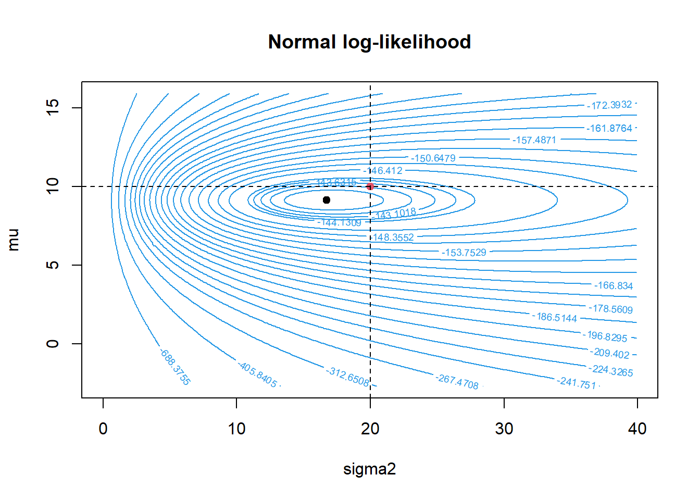
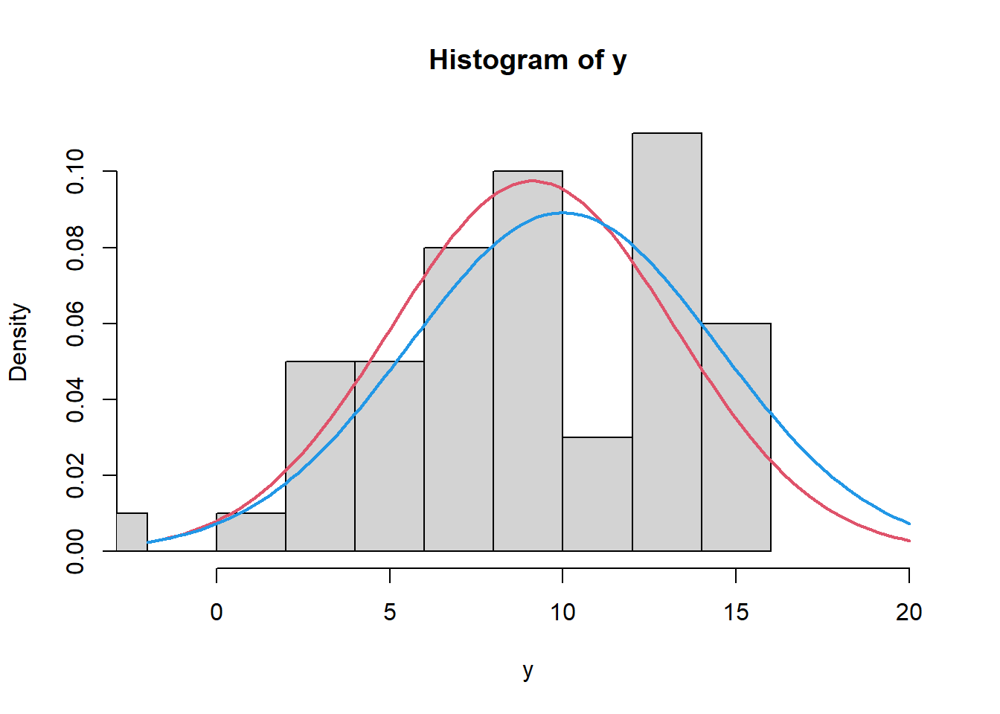
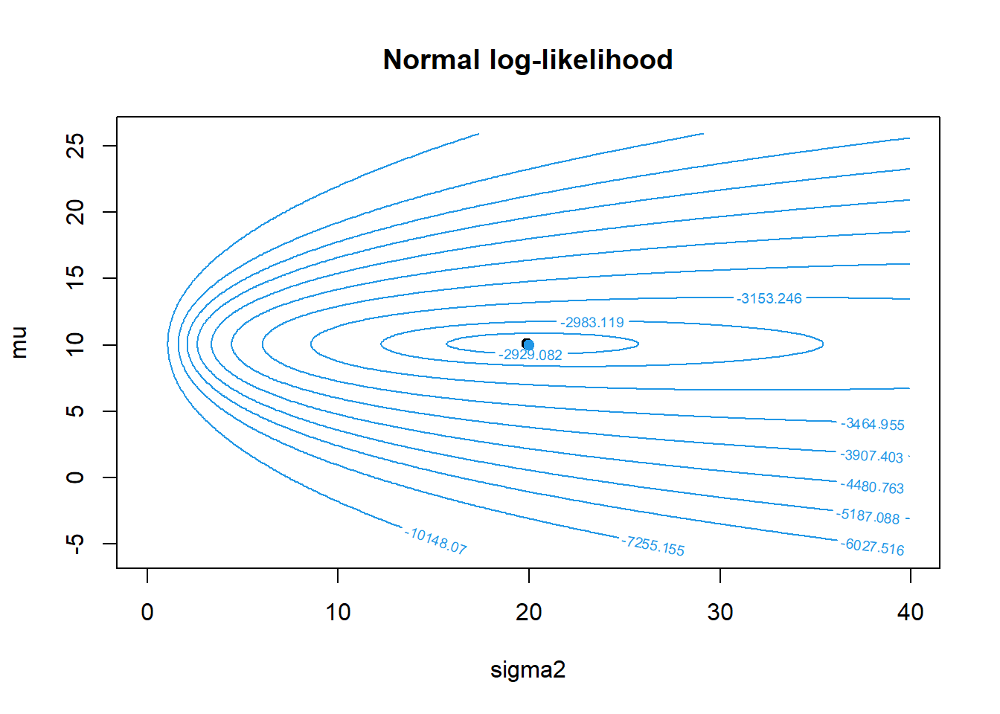
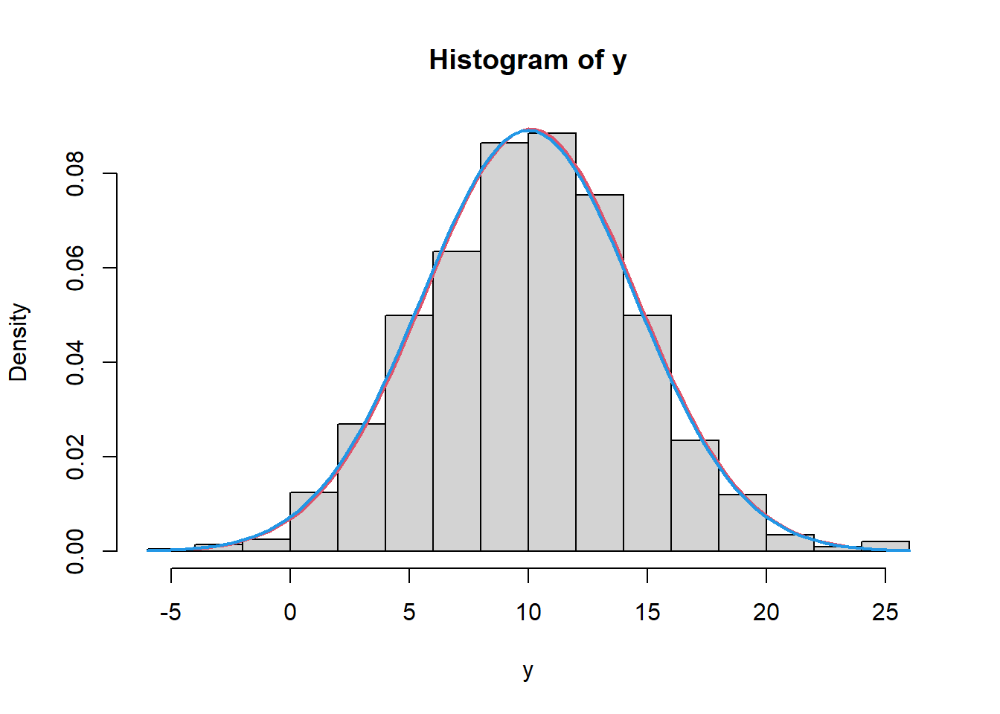
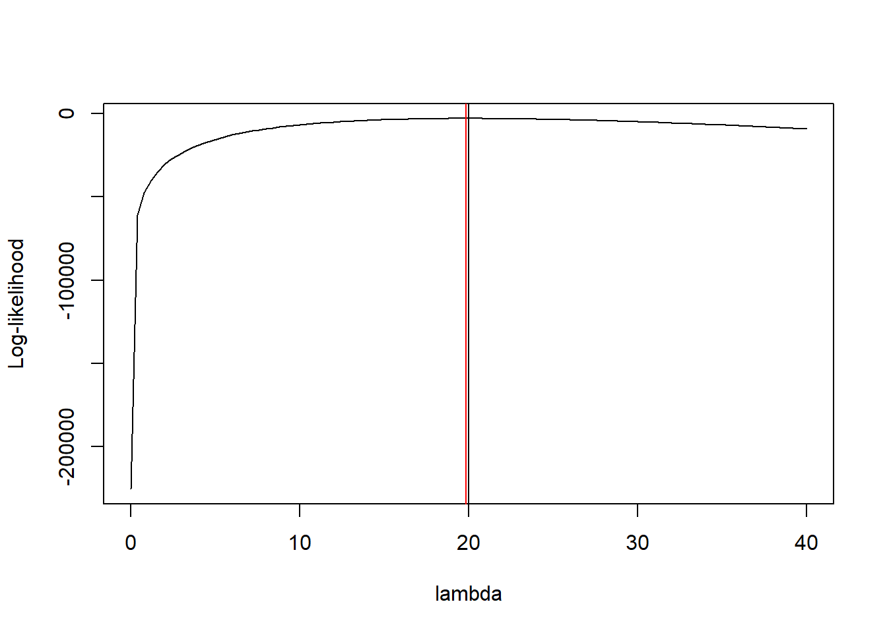

n <- 50
mu_true <- 10
sigma2_true <- 20
# Data generation:
set.seed(369)
y <- rnorm(n, mu_true, sqrt(sigma2_true))
mu_mle <- mean(y)
sigma2_mle <- (n-1)/n*var(y)
# Let's plot the log-likelihood function:
mu_grid <- seq(min(y)-0.5, max(y)+0.5, 0.1)
sigma2_grid <- seq(0.01, 40, 0.1)
theta <- expand.grid(mu=mu_grid, sigma2=sigma2_grid)
# Calcola la funzione obiettivo in corrispondenza di ogni riga della griglia:
llik <- apply(theta,1,function(x)
sum(log(dnorm(y,as.numeric(x[1]), sqrt(as.numeric(x[2]))))))
# Cambio le dimensioni dell'oggetto contenente i valori della funzione target:
dim(llik) <- c(length(mu_grid),length(sigma2_grid))
contour(x=unique(sigma2_grid), y=unique(mu_grid),z=t(llik),
levels = quantile(unique(llik[which(llik != -Inf,arr.ind = T)]), p=c(seq(.05,.95,.05),.96,.97,.98,.99)),
col=4,main="Normal log-likelihood",
ylab="mu", xlab="sigma2")
points(sigma2_mle, mu_mle, pch=19, col=1)
points(sigma2_true, mu_true, pch=19, col=2)
abline(h=mu_true, v=sigma2_true, lty=2)
hist(y, prob=T, xlim=c(-2,20))
curve(dnorm(x, mu_mle, sqrt(sigma2_mle)), add=T, col=2, lwd=2)
curve(dnorm(x, mu_true, sqrt(sigma2_true)), add=T, col=4, lwd=2)
#########################################################
#########################################################
# How the log-likelihood varies with more data?
n <- 1000
# Data generation:
set.seed(369)
y <- rnorm(n, mu_true, sqrt(sigma2_true))
mu_mle <- mean(y)
sigma2_mle <- (n-1)/n*var(y)
# Let's plot the log-likelihood function:
mu_grid <- seq(min(y)-0.5, max(y)+0.5, 0.1)
sigma2_grid <- seq(0.01, 40, 0.1)
theta <- expand.grid(mu=mu_grid, sigma2=sigma2_grid)
# Calcola la funzione obiettivo in corrispondenza di ogni riga della griglia:
llik <- apply(theta,1,function(x) sum(log(dnorm(y,as.numeric(x[1]), sqrt(as.numeric(x[2]))))))
# Cambio le dimensioni dell'oggetto contenente i valori della funzione target:
dim(llik) <- c(length(mu_grid),length(sigma2_grid))
contour(x=unique(sigma2_grid), y=unique(mu_grid),z=t(llik),
levels = quantile(unique(llik[which(llik != -Inf,arr.ind = T)]),
p=c(seq(.15,.95,.1),.99)),
col=4,main="Normal log-likelihood",
ylab="mu", xlab="sigma2")
points(sigma2_mle, mu_mle, pch=19, col=1)
points(sigma2_true, mu_true, pch=19, col=4)
hist(y, prob=T)
curve(dnorm(x, mu_mle, sqrt(sigma2_mle)), add=T, col=2, lwd=2)
curve(dnorm(x, mu_true, sqrt(sigma2_true)), add=T, col=4, lwd=2)
###########################################
# Data generation:
set.seed(369)
y <- rpois(n, lambda=20)
lambda_mle <- mean(y)
llik_pois <- function(lambda, y){
sum(log(dpois(y,lambda)))
}
llik_pois <- Vectorize(llik_pois, vectorize.args = "lambda")
curve(llik_pois(lambda=x,y=y),
xlim=c(0.0001, 40),
ylab="Log-likelihood", xlab="lambda")
abline(v=20)
abline(v=lambda_mle, col="red")